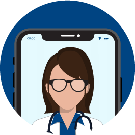

Digital care
You never need to make an appointment to seek care digitally. Doctors, nurses and midwives work with us to help you via video call or chat. Our digital care is open every day of the week, all year round.
Seek care in the appWhat we can help you with in the app
-
Digital care meeting
Quick help via video call or chat -
Quick prescription renewals
Renew your prescriptions quickly and easily in the app -
Vaccination overview
Get reminders when it's time to take your next dose -
Certificates and Referrals
Help with certificates and referrals via video call
How to get
-

Book an appointment
We can treat many symptoms with an in-app video call. To start booking, log in to the app using BankID. -

Contact the care staff
Our experienced staff will provide you with assistance and advice. If necessary, we will extend prescriptions for medications, issue certificates, or help you with further care. -
Follow-up if necessary
If necessary, we guarantee that you will receive follow—up and repeat visits - digitally, at one of our medical centers or at a specialist appointment.
What does it cost?
The patient fee varies depending on the region you are registered in, errand and age. The visit is free of charge if you have a free pass, or if you are under 18 or over 84 years of age. Read more about patient fees below.
See patient feesFAQ about digital care
Why do I have to identify myself and log in with Bank ID?
Our goal is to offer you care as quickly as possible and it only takes a few minutes to start an errand in the app. During certain periods, many people contact us at the same time and there may be a queue, but you can always see your place in the queue and estimated waiting time. You will receive a notification when it is your turn.
Can I use someone else's Bank ID to seek care from you?
Our goal is to offer you care as quickly as possible and it only takes a few minutes to start an errand in the app. During certain periods, many people contact us at the same time and there may be a queue, but you can always see your place in the queue and estimated waiting time. You will receive a notification when it is your turn.
How long does it take before I can talk to a healthcare professional?
Our goal is to offer you care as quickly as possible and it only takes a few minutes to start an errand in the app. During certain periods, many people contact us at the same time and there may be a queue, but you can always see your place in the queue and estimated waiting time. You will receive a notification when it is your turn.
Can I get help with a pollen allergy?
Our goal is to offer you care as quickly as possible and it only takes a few minutes to start an errand in the app. During certain periods, many people contact us at the same time and there may be a queue, but you can always see your place in the queue and estimated waiting time. You will receive a notification when it is your turn.
How do I reschedule or cancel my appointment?
Our goal is to offer you care as quickly as possible and it only takes a few minutes to start an errand in the app. During certain periods, many people contact us at the same time and there may be a queue, but you can always see your place in the queue and estimated waiting time. You will receive a notification when it is your turn.
Download the app and order a video call today
Schedule a video call with one of our licensed doctors, nurses, and midwives. Doktor.se This is part of primary care, and a video call is like a regular visit to the doctor.